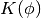
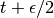
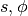
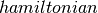

Hybrid Monte-Carlo Sampling¶
Note
This is an advanced tutorial, which shows how one can implemented Hybrid Monte-Carlo (HMC) sampling using Theano. We assume the reader is already familiar with Theano and energy-based models such as the RBM.
Note
The code for this section is available for download here.
Theory¶
Maximum likelihood learning of energy-based models requires a robust algorithm to sample negative phase particles (see Eq.(4) of the Restricted Boltzmann Machines (RBM) tutorial). When training RBMs with CD or PCD, this is typically done with block Gibbs sampling, where the conditional distributions and are used as the transition operators of the Markov chain.
In certain cases however, these conditional distributions might be difficult to sample from (i.e. requiring expensive matrix inversions, as in the case of the “mean-covariance RBM”). Also, even if Gibbs sampling can be done efficiently, it nevertheless operates via a random walk which might not be statistically efficient for some distributions. In this context, and when sampling from continuous variables, Hybrid Monte Carlo (HMC) can prove to be a powerful tool [Duane87]. It avoids random walk behavior by simulating a physical system governed by Hamiltonian dynamics, potentially avoiding tricky conditional distributions in the process.
In HMC, model samples are obtained by simulating a physical system, where particles move about a high-dimensional landscape, subject to potential and kinetic energies. Adapting the notation from [Neal93], particles are characterized by a position vector or state and velocity vector . The combined state of a particle is denoted as . The Hamiltonian is then defined as the sum of potential energy (same energy function defined by energy-based models) and kinetic energy , as follows:
Instead of sampling directly, HMC operates by sampling from the
canonical distribution
.
Because the two variables are independent, marginalizing over
 is trivial and recovers the original distribution of
interest.
is trivial and recovers the original distribution of
interest.
Hamiltonian Dynamics
State  and velocity are modified such that
remains constant throughout the simulation.
The differential equations are given by:
and velocity are modified such that
remains constant throughout the simulation.
The differential equations are given by:
(1)
As shown in [Neal93], the above transformation preserves volume and is reversible. The above dynamics can thus be used as transition operators of a Markov chain and will leave invariant. That chain by itself is not ergodic however, since simulating the dynamics maintains a fixed Hamiltonian . HMC thus alternates hamiltonian dynamic steps, with Gibbs sampling of the velocity. Because and are independent, sampling is trivial since , where is often taken to be the uni-variate Gaussian.
The Leap-Frog Algorithm
In practice, we cannot simulate Hamiltonian dynamics exactly because of the problem of time discretization. There are several ways one can do this. To maintain invariance of the Markov chain however, care must be taken to preserve the properties of volume conservation and time reversibility. The leap-frog algorithm maintains these properties and operates in 3 steps:
(2)
We thus perform a half-step update of the velocity at time , which is then used to compute and .
Accept / Reject
In practice, using finite stepsizes  will not preserve
exactly and will introduce bias in the simulation.
Also, rounding errors due to the use of floating point numbers means that the
above transformation will not be perfectly reversible.
will not preserve
exactly and will introduce bias in the simulation.
Also, rounding errors due to the use of floating point numbers means that the
above transformation will not be perfectly reversible.
HMC cancels these effects exactly by adding a Metropolis accept/reject
stage, after  leapfrog steps. The new state is
accepted with probability , defined as:
leapfrog steps. The new state is
accepted with probability , defined as:
HMC Algorithm
In this tutorial, we obtain a new HMC sample as follows:
- sample a new velocity from a univariate Gaussian distribution
- perform leapfrog steps to obtain the new state
- perform accept/reject move of
Implementing HMC Using Theano¶
In Theano, update dictionaries and shared variables provide a natural way to implement a sampling algorithm. The current state of the sampler can be represented as a Theano shared variable, with HMC updates being implemented by the updates list of a Theano function.
We breakdown the HMC algorithm into the following sub-components:
- : a symbolic Python function which, given an initial position and velocity, will perform leapfrog updates and return the symbolic variables for the proposed state .
- : a symbolic Python function which given a starting position,
generates
 by randomly sampling a velocity vector. It then
calls and determines whether the transition is to be accepted.
by randomly sampling a velocity vector. It then
calls and determines whether the transition is to be accepted. - : a Python function which, given the symbolic outputs of , generates the list of updates for a single iteration of HMC.
- : a Python helper class which wraps everything together.
simulate_dynamics
To perform leapfrog steps, we first need to define a function over
which can iterate over. Instead of implementing Eq. (2)
verbatim, notice that we can obtain and
by performing an initial half-step update for
, followed by full-step updates for  and
one last half-step update for . In loop form, this gives:
(3)![& \phi_i(t + \epsilon/2) = \phi_i(t) -
\frac{\epsilon}{2} \frac{\partial{}}{\partial s_i} E(s(t)) \\
& s_i(t + \epsilon) = s_i(t) + \epsilon \phi_i(t + \epsilon/2) \\
& \text{For } m \in [2,n]\text{, perform full updates: } \\
& \qquad
\phi_i(t + (m - 1/2)\epsilon) = \phi_i(t + (m-3/2)\epsilon) -
\epsilon \frac{\partial{}}{\partial s_i} E(s(t + (m-1)\epsilon)) \\
& \qquad
s_i(t + m\epsilon) = s_i(t) + \epsilon \phi_i(t + (m-1/2)\epsilon) \\
& \phi_i(t + n\epsilon) = \phi_i(t + (n-1/2)\epsilon) -
\frac{\epsilon}{2} \frac{\partial{}}{\partial s_i} E(s(t + n\epsilon)) \\](_images/math/7547d387435a98653e3996cc7734f2926e8d203f.png)
The inner-loop defined above is implemented by the following
function, with , and replacing and
respectively.
The function performs the full algorithm of Eqs.
(3). We start with the initial half-step update of
and full-step of , and then scan over the method
times.
A final half-step is performed to compute  , and the
final proposed state is returned.
, and the
final proposed state is returned.
hmc_move
The function implements the remaining steps (steps 1 and 3) of an
HMC move proposal (while wrapping the function). Given a
matrix of initial states () and
energy function ( ), it defines the symbolic graph for
computing of HMC, using a given . The function prototype
is as follows:
), it defines the symbolic graph for
computing of HMC, using a given . The function prototype
is as follows:
We start by sampling random velocities, using the provided shared RandomStream object. Velocities are sampled independently for each dimension and for each particle under simulation, yielding a matrix.
Since we now have an initial position and velocity, we can now call the to obtain the proposal for the new state .
We then accept/reject the proposed state based on the Metropolis algorithm.
where and  are helper functions, defined as follows.
finally returns the tuple . is a symbolic boolean variable indicating whether or not the new state should be used or not.
hmc_updates
The purpose of is to generate the list of updates to perform, whenever our HMC sampling function is called. thus receives as parameters, a series of shared variables to update (, and ), and the parameters required to compute their new state.
Using the above code, the dictionary can be used to update the state of the sampler with either (1) the new state if is True, or (2) the old state if is False. This conditional assignment is performed by the switch op.
expects as its first argument, a boolean mask with the same broadcastable dimensions as the second and third argument. Since is scalar-valued, we must first use dimshuffle to transform it to a tensor with broadcastable dimensions ().
additionally implements an adaptive version of HMC, as implemented in the accompanying code to [Ranzato10]. We start by tracking the average acceptance rate of the HMC move proposals (across many simulations), using an exponential moving average with time constant .
If the average acceptance rate is larger than the , we increase the by a factor of in order to increase the mixing rate of our chain. If the average acceptance rate is too low however, is decreased by a factor of , yielding a more conservative mixing rate. The clip op allows us to maintain the in the range [, ].
The final updates list is then returned.
HMC_sampler
We finally tie everything together using the class. Its main elements are:
- : a constructor method which allocates various shared variables and strings together the calls to and . It also builds the theano function , whose sole purpose is to execute the updates generated by .
- : a convenience method which calls the Theano function and returns a copy of the contents of the shared variable .
Testing our Sampler¶
We test our implementation of HMC by sampling from a multi-variate Gaussian distribution. We start by generating a random mean vector and covariance matrix , which allows us to define the energy function of the corresponding Gaussian distribution: . We then initialize the state of the sampler by allocating a shared variable. It is passed to the constructor of along with our target energy function.
Following a burn-in period, we then generate a large number of samples and compare the empirical mean and covariance matrix to their true values.
The above code can be run using the command: “nosetests -s code/hmc/test_hmc.py”. The output is as follows:
[desjagui@atchoum hmc]$ python test_hmc.py
****** TARGET VALUES ******
target mean: [ 6.96469186 2.86139335 2.26851454 5.51314769 7.1946897 ]
target cov:
[[ 1. 0.66197111 0.71141257 0.55766643 0.35753822]
[ 0.66197111 1. 0.31053199 0.45455485 0.37991646]
[ 0.71141257 0.31053199 1. 0.62800335 0.38004541]
[ 0.55766643 0.45455485 0.62800335 1. 0.50807871]
[ 0.35753822 0.37991646 0.38004541 0.50807871 1. ]]
****** EMPIRICAL MEAN/COV USING HMC ******
empirical mean: [ 6.94155164 2.81526039 2.26301715 5.46536853 7.19414496]
empirical_cov:
[[ 1.05152997 0.68393537 0.76038645 0.59930252 0.37478746]
[ 0.68393537 0.97708159 0.37351422 0.48362404 0.3839558 ]
[ 0.76038645 0.37351422 1.03797111 0.67342957 0.41529132]
[ 0.59930252 0.48362404 0.67342957 1.02865056 0.53613649]
[ 0.37478746 0.3839558 0.41529132 0.53613649 0.98721449]]
****** HMC INTERNALS ******
final stepsize 0.460446628091
final acceptance_rate 0.922502043428
As can be seen above, the samples generated by our HMC sampler yield an empirical mean and covariance matrix, which are very close to the true underlying parameters. The adaptive algorithm also seemed to work well as the final acceptance rate is close to our target of .
References¶
| [Alder59] | Alder, B. J. and Wainwright, T. E. (1959) “Studies in molecular dynamics. 1. General method”, Journal of Chemical Physics, vol. 31, pp. 459-466. |
| [Andersen80] | Andersen, H.C. (1980) “Molecular dynamics simulations at constant pressure and/or temperature”, Journal of Chemical Physics, vol. 72, pp. 2384-2393. |
| [Duane87] | Duane, S., Kennedy, A. D., Pendleton, B. J., and Roweth, D. (1987) “Hybrid Monte Carlo”, Physics Letters, vol. 195, pp. 216-222. |
| [Neal93] | (1, 2) Neal, R. M. (1993) “Probabilistic Inference Using Markov Chain Monte Carlo Methods”, Technical Report CRG-TR-93-1, Dept. of Computer Science, University of Toronto, 144 pages |